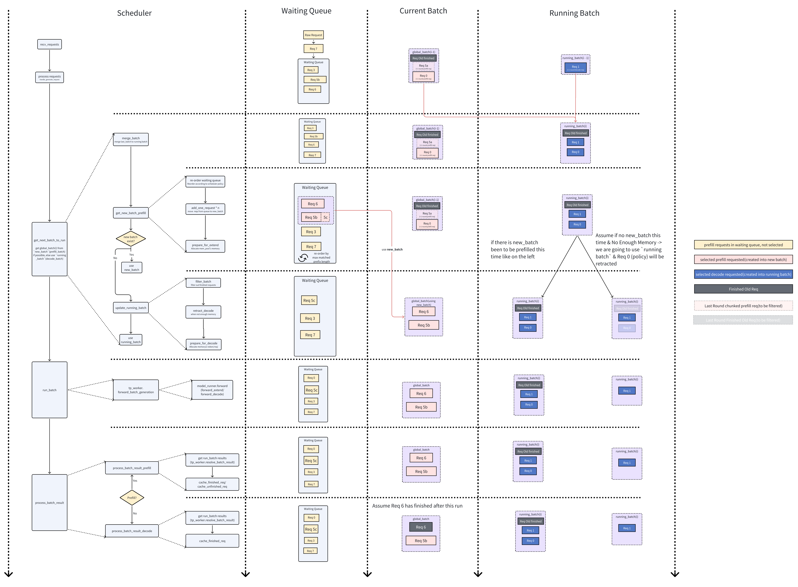
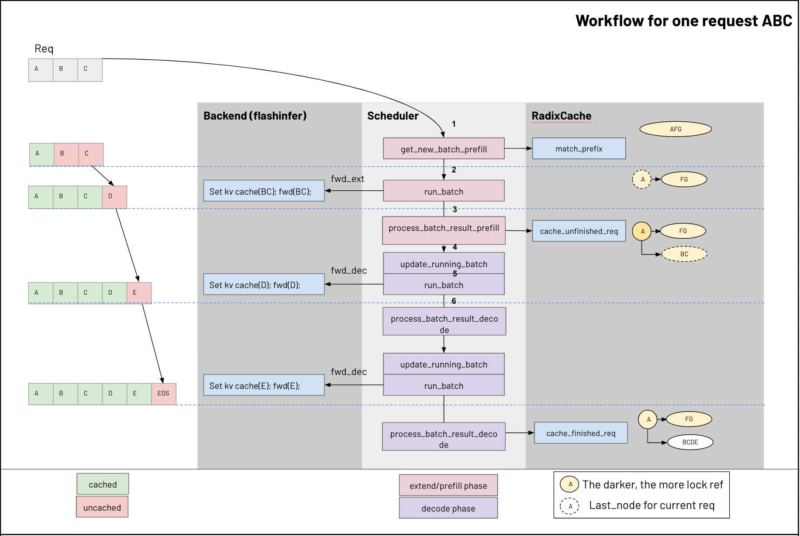

KV Cache Code Walkthrough
This document provides an overview of the KV cache management implementation. Our narrative start with the Scheduler components which orchestrat the requests in batch. After that, we zoom into a single request, follow its journey through prefill and decode phases, detailing how the KV cache and memory pools are updated step-by-step.
To facilitate this explanation, we will make a few assumptions in our examples:
- We use FlashInfer as backend.
- We use Longest Prefix as priority for requests in waiting_queue (e.g., the longest-prefix-match scheduling in SGLang paper).
- We don't consider jump forward decoding/speculative decoding.
- We don't enable enable_mixed_chunck.
- We use Radix Cache as tree_cache.
Scheduler Overview
This section provides a high-level overview of the Scheduler which is responsible for managing active requests.

The figure illustrates how the Scheduler directs requests from thewaiting_queue into a new_batch (for prefill/extend phase) and then into the running_batch (for decode phase). Let's firstly understand each of these building blocks:
waiting_queue
A data structure designed to hold active requests. The queue would be reordered on demand based on requests priority(in our assumption, the requests with longest prefix) or available memory to optimize batch processing time.
- What to Enqueue?
- Newly arrived requests.
- Requests that are returned from retract_decode.
> retract
>
> If available memory is insufficient during decode, the scheduler may retract certain requests (via retract_decode) from the running_batch, returning them to the waiting queue for later processing.
new_batch
A batch of requests that are ready for prefill/extend stage.
"prefill" vs "extend"
The key difference is whether it builds upon an existing prefix in the cache Prefill handles the initial processing of a request’s input tokens to populate the KV cache with their key-value (KV) pairs when no prior cache exists or when the prefix match is incomplete. Extend builds upon an existing prefix in the cache, appending new tokens’ KV pairs.
running_batch
A batch of requests that are ready for decode stage.
cur_batch
The batch of requests that are currently being processed in the main loop of Scheduler (run_batch function).
- How is cur_batch being formed?
If there's requests ready for prefill (new_batch) in this cycle, use new_batch as cur_batch. Otherwise, cur_batch would process those that are ready for decode, thus use running_batch as cur_batch.
Sequences
Let's walk through the sequence in the diagram now.
1. New Request arrived
The Scheduler continuously calls recv_requests to collect newly arrived requests, validate them and place them into the waiting_queue.
In our example, Req 7 is received and enqueued.
2. Merge Batches
Before form the cur_batch for this round, Scheduler would merge the last round's cur_batch into running_batch. In the diagram, cur_batch from last round are shown as cur_batch(i-1) and running_batch are shown as running_batch(i-1). In our example, Req 0 and Req 1 will be merged together into the new running_batch.
- Chunked Prefill Fragment Being Removed
If a request requires more tokens than the available memory (remaining_tokens), it may be chunked into smaller parts. During the Merge Batches step, the scheduler also removes the last round's being_chunked_request. These chunked requests (like Req 5a) are temporary fragments created solely for populate KV cache in prefill, they are not needed to proceed to decode phase, thus they can be removed once the prefill for it being finished.
To better understand the chunking process, let's look at how Req 5 is handled:
1. Initially, Req 5 enters the waiting queue as a single long request
2. During the first prefill attempt, due to memory constraints, it's split into Req 5a and Req 5b
3. After Req 5a is processed and its KV cache is stored, it's removed as a being_chunked_request
4. In the current round, when trying to process Req 5b, it still exceeds the resource limit
5. Therefore, Req 5b is further split into a new Req 5b (which goes into the global batch) and Req 5c (which stays in the waiting queue)
3. Forming the new_batch:
The process of forming a new_batch consists of three main steps:
- Reorder Waiting Queue: - The scheduler reorders requests based on its scheduling policy - By default, it prioritizes requests with the longest prefix in the radix cache
-
Request Selection: - Requests are selected one by one from the reordered queue - In our example:
Req 6is selected first as it has the longest prefix match in the cacheReq 5bis selected next as there's still available memory- However,
Req 5bexceeds the memory limit and is further split intoReq 5bandReq 5c Req 5bis added to thenew_batchwhileReq 5cremains in the waiting queue
-
Prepare for Extend: Allocateing spaces in
req_to_token_poolandtoken_to_kv_poolfor thenew_batchrequests - If nonew_batchcan be formed, the scheduler will fallback to userunning_batchascur_batch, it will firstly remove finished requests likeOld Finished Req. - If GPU memory becomes insufficient, some decoding requests may be retracted according to the retraction policy. In our example,Req 0is retracted during this process.
4. Running the Batch:
Once the Global Batch is determined, run_batch is called to run a forward pass.
5. Result Processing:
After run_batch, the Scheduler calls process_batch_result to to determine which requests have finished and which continue. In our example, Req 6 is finished and turns grey, Req 5b remains unfinished.
6. Iteration:
The loop repeats until all requests are eventually completed. If insufficient memory is encountered, requests may be chunked (in prefill) or retracted (in decode), then reinserted into the waiting queue for later processing.
A Request's Lifecycle
This section zoom into one request's lifecycle, we would step-by-step walkthrough the key functions that updates the KV Cache & Memory Pools.

Let's firstly understand some of the important building blocks for managing KV.
There are two-level memory pools to manage KV cache.
req_to_token_pool
A map from a request to its tokens' KV cache indices.
- Shape: Max Allowed Requests Number (being set by argument max-running-requests for the maximum number of requests to run concurrently) * Max Context Length for each request (being set by config model_config.context_len)
- Access:
- Dim0: req_pool_indices identify the specific request
- Dim1: token positions in req (starting from 0, 1, 2...), identify the specific token in the request
- Value: out_cache_loc for token, it points to the KV cache indices associated with the token identified by Dim0 and Dim1
token_to_kv_pool
req_to_token_pool maintained the map between request to tokens KV cache indices, token_to_kv_pool further maps token from its KV cache indices to its real KV cache data. Note that, for different attention implementation, like MHA, MLA, Double Sparsity, token_to_kv_pool could have different implementation.
- Layout: Number of Layers * Max Allowed Tokens Number * Number of Head * Head Dimension
- Access:
- Dim0: layer_id identify the specific layer
- Dim1: out_cache_loc identify the specific KV cache indices (free slots)
- Dim2: Head
- Dim3: Head Dimension
- Value: cache_k for k_buffer and cache_v for v_buffer, the real KV Cache Data
Note that we normally retrieve the KV Cache for entire layer all together, because we would need all prior tokens' KV in a request to do forward.
tree_cache
tree_cache is a tree structure to enhance the reuse of prefix KV Cache across requests. tree_cache is responsible for updating req_to_token_pool and token_to_kv_pool on a token level for each request. Across tree_cache, req_to_token_pool, and token_to_kv_pool, tokens are linked via it's KV Cache indices.
- Access:
- Key: Token ID, same token's KV Cache is agnostic from requests
- Value: Token's KV Cache Indices
Sequence
Let's walk through the sequence in the diagram now.
Prefill Batch
Step 1. Function get_new_batch_prefill
- Update prefix from radix tree cache for request
- When
ABCcome in, say the current radix cache have one nodeAFGthats currently being referenced. match_prefixwould try to find the prefix forABCin the current radix cache, and it matched up to the first tokenAin the node.- Radix Cache Split the node into
AandFG, nodeAis the current last node for this request.
- When
- Invoke
prepare_for_extendreq_to_token_pool- Allocate to
req_pool_indices - Add prefix to
req_to_token_pool token_to_kv_pool- Allocate (the sum of each reqs (number of input id tokens - number of prefix tokens))
out_cache_loc - In our example of request ABC, the batch size is 1
- number of input id tokens = 3 -> A,B,C
- number of prefix tokens = 1 -> A
- We will allocate 2 slots to
out_cache_locfor token B, C
Step 2. Function run_batch
Run forward_extend on the current batch, this will eventually invoke the Attention Backend, who is responsible for
- Set the kv cache of extend tokens.
- Set KV cache for extends token to token_to_kv_pool (Function save_kv_cache)
- In our example: from above steps, we get 2 slots for token B, C in out_cache_loc, their corresponding K, V would be set to this 2 slots here.
- Run forward attention calculation, the input would be
- Q = extend tokens, in our example token B, C
- KV = All cached tokens from req_to_token_pool by out_cache_loc including A(prefix tokens), B, C(extend tokens) (Function create_flashinfer_kv_indices_triton).
Step 3. Function process_batch_result_prefill
cache_finished_req and cache_unfinished_req are responsible for managing the KV cache in Radix Cache, ReqToTokenPool, and TokenToKVPool.
- If the request is finished, invoke cache_finished_req (refer to this secion for details of cache_finished_req )
- else invoke cache_unfinished_req (refer to this secion for details of cache_unfinished_req )
In our example, cache_unfinished_req is invoked after extend/prefill phase, BC was added as a child node for A, both nodes A and BC increase the lock reference, node BC become the last_node for the request.
Decode Batch
Step 4. Function update_running_batch
- Invoke
prepare_for_decodereq_to_token_poolNo changetoken_to_kv_pool- Allocate (batch size * 1) slot to
out_cache_locbecause we only generate one token for each batch in decode mode - For example: in above diagram, the round that generate D from C
- We will allocate 1 slots to
out_cache_locfor token D
- We will allocate 1 slots to
Step 5. Function run_batch
Run forward_decode on the current batch, this will eventually invoke the Attention Backend, who is responsible for
- Save the kv cache of decode token.
- Save KV cache for decode token to token_to_kv_pool (Function save_kv_cache)
- For example: In above step, we get 1 slots for token D in out_cache_loc, it's corresponding K, V would be saved to this 1 slot here.
- Run forward, the input would be:
- Q = decode token, in our example token D
- KV = All cached tokens from req_to_token_pool by out_cache_loc including A, B, C(from previous round), D (Function create_flashinfer_kv_indices_triton)
Step 6. Function process_batch_result_decode
If the request is finished, invoke cache_finished_req (refer to this secion for details of cache_finished_req ). No operation for cache is needed for unfinished request in decode phase.
In our example, DE is appended to node BC, and the lock reference for node A and BCDE got decreased.
RadixCache cache_finished_req & cache_finished_req
This section would go deeper on cache_finished_req & cache_finished_req's flow.
Quick Overview of cache_finished_req() vs. cache_unfinished_req()
| Sequence | cache_unfinished_req() |
cache_finished_req() |
|---|---|---|
1. Get kv_indices from req_to_token_pool.req_to_token |
- | - |
2. Update Radix Cache (insert()) |
- | - |
3. Free KV Cache (self.token_to_kv_pool.free()) |
- | release duplicate kv cache storage |
4. Handle req_to_token_pool |
Writes and updates req_to_token_pool | **Releases**req_to_token_pool` as the request is completed. |
|
5. Handle req.last_node |
Increases the reference count of req.last_node |
Decreases the reference count of req.last_node, as req is finished. |
As we can observe, the core functionality is essentially the same for cache_unfinished_req() and cache_finished_req(), we are going to walk through the code for how req_to_token_pool, token_to_kv_pool and tree_cache are updated during cache_unfinished_req(), and explain the key difference between cache_unfinished_req() and cache_finished_req().
cache_unfinished_req
-
Get KV Index: Get KV index from
req_to_token_pool.req_to_token -
Update Radix Cache
new_prefix_len = self.insert(token_ids, kv_indices.clone())
This method inserts token_ids and their corresponding kv_indices into the Radix Cache. If successful, it returns a new prefix length (new_prefix_len).
-
Free KV Cache -
Update
prefix_indicesandlast_nodeCalls
match_prefix()to update the request’sprefix_indicesandlast_node. This is important asprefix_indicesandlast_nodewill be used in next iteration. -prefix_indicesis used to calculate the needed size of extend/prefill tokens. -last_nodeis used to keep track of a requests last node in the radix tree so that it can be used to trace back towards root node when updating lock. -
Lock Management for Memory Safety To prevent unintended deletion of active cache nodes. Keeping a lock on a node shields it from being freed while still needed. After above state transition, the old
last_nodeis unlocked using dec_lock_ref(), allowing it to be freed when no longer in use. The newlast_nodeis locked, protecting it from deletion.
cache_finished_req
Similar to cache_unfinished_req(), cache_finished_req() also has the following steps:
- When a request
reqis completed, itstoken_idsare stored in the Radix Cache. Update Radix Cache - Release redundant KV Cache space in
token_to_kv_pool(removing duplicates) by marking the KV indices as free slots. - Release
req_to_token_pooland updatetree_cache.